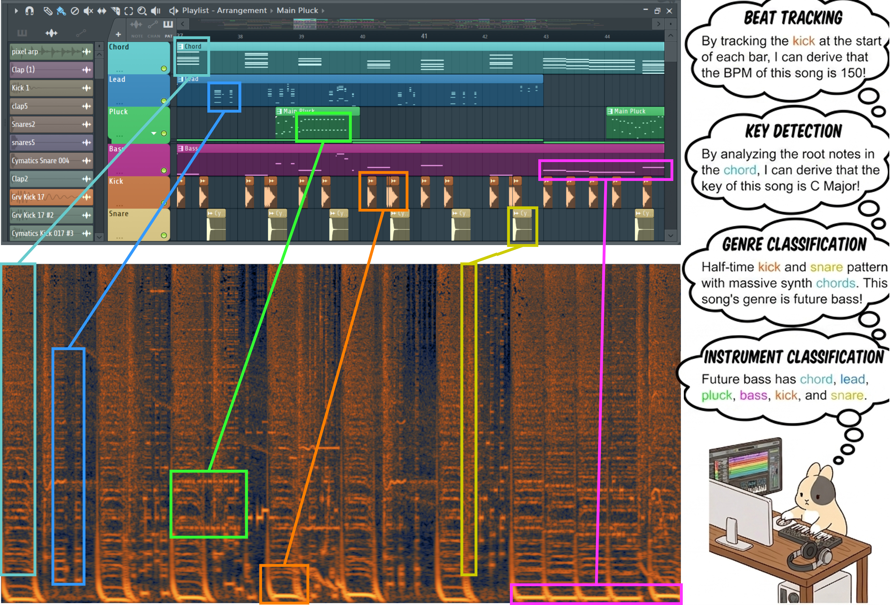
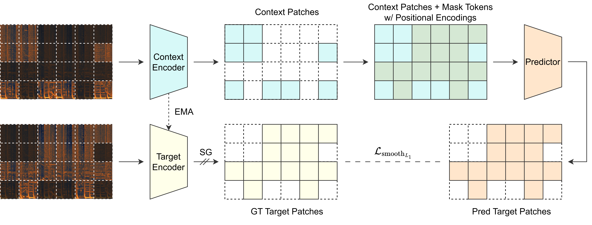
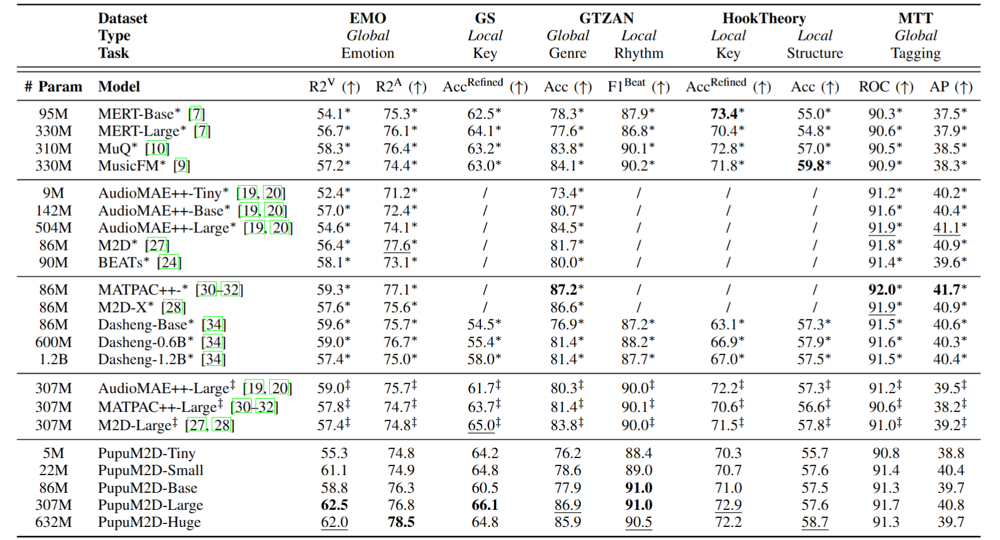
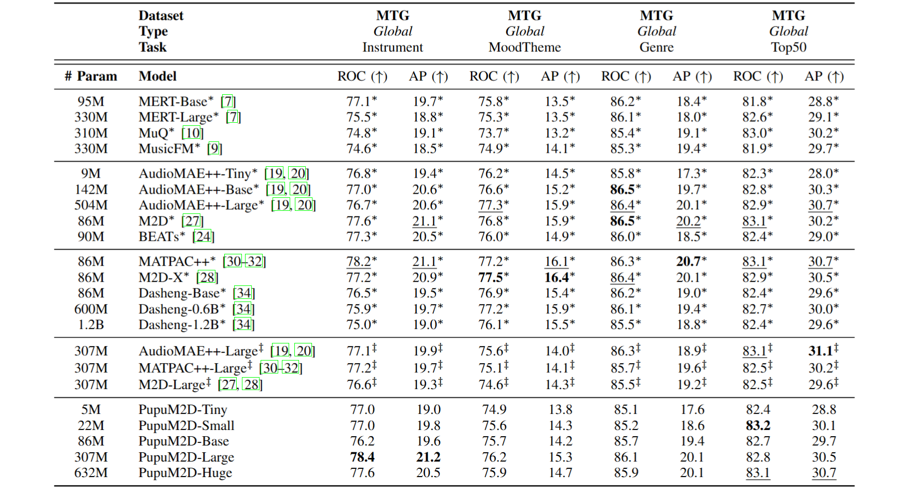

Self-supervised learning (SSL) has emerged as an essential paradigm for music information retrieval (MIR). While current SSL models achieve state-of-the-art performance across various MIR tasks, they typically treat audio as 1D sequences, either operating on time-domain waveforms or on flattened time-frequency-domain spectrograms. This discards the rich spatial and structural information in time-frequency representations and overlooks a fundamental intuition in music production. In particular, music is naturally represented as time-frequency grids in MIDI-based workflows, a structure that tightly corresponds to 2D spectrograms and inherently makes many MIR tasks trivial. Motivated by this intuition, we propose PupuM2D, a musical Masked Modeling Duo (M2D) model that is trained directly on 2D music spectrograms. Instead of applying masked language modeling (MLM) to 1D sequences, PupuM2D learns robust representations by predicting the latent embeddings of masked 2D music spectrogram patches from unmasked contexts. To optimally adapt such a framework to music signals, we also apply domain-specific modifications to model architecture, training scheme, and inference paradigm, with comprehensive ablation studies showing their effectiveness. Evaluations on the MARBLEv2 benchmark show that PupuM2D outperforms the sequence-based SSL models across multiple MIR tasks in linear probing. Additionally, case studies of the attention maps also confirm that PupuM2D captures musically meaningful patterns within the 2D time-frequency domain.
The intuition of this work is extremely simple:
"Music SSL models should be trained on 2D Spectrograms."
As a former music producer and DJ, neither I nor any of my friends would use the audio waveform as a reference for producing, mixing, or mastering. Instead, we use Piano Rolls for production, we observe real-time FFT spectra from FabFilter Pro-Q 4 for mixing and sound design, and eventually use Izotope RX to analyze the resulting song based on its Mel-Spectrogram. All of these are in 2D time-frequency domain, instead of 1D time domain.
In case you don't know what Future Bass is and what Kawaii Base is, here are some introductory videos. Although the narratives of these videos are in Chinese, you can still get the vibe of these music genres.
We use the viral Kawaii Bass song Pixel Galaxy by Snail's House to explain the idea. Below is a walkthrough of its classical FL Studio fan-made reproduction.
Here, let's focus on the first two bars of the first Drop. The music in this section primarily consists of the tracks shown in the figure below.

The multi-track project is a structure that strongly correlates to the 2D spectrogram, and music producers inherently can map time-frequency partterns in the 2D spectrogram to individual tracks and "mentally reconstruct" the project, therefore making a lot of MIR tasks intuitively trival, as shown in the figure below:


We adapt the Masked Modeling Duo (M2D) architecture and therefore propose PupuM2D. We did not use the Masked Autoencoder (MAE) architecture, as it is prone to overfitting spectrogram details, since musical spectrogram patches are highly temporally and spectrally correlated. We did not use the DINO architecture, as music signals inherently lack data augmentation methods to obtain different views. We also did not adapt the Joint-Embedding Predictive Architecture (JEPA) as M2D is proposed eailier in audio SSL and it still performs better. To optimize such a framework in the music domain, we additionally introduce various essential changes to the model architecture, training scheme, and inference paradigms. For more details, please checkout our preprint.


We evaluate PupuM2D on the MARBLEv2 benchmark, as illustrated above. The details description of differnet tasks can be found here. In particular, for 1D sequence-based music and general sound SSL baselines, we compare with MERT (ICLR 2024), MuQ (TASLP 2025), and MusicFM (ICASSP 2024); for 2D spectrogram-based audio SSL baselines, we compare with AudioMAE++ (NeurIPS 2022, MLSP 2025), M2D (ICASSP 2023), and BEATs (ICML 2023). We also compare with universal sound SSL baselines including MATPAC++ (ICASSP 2025), M2D-X (TASLP 2024), and Dasheng (Interspeech 2024). We further reproduced several representative audio and universal SSL models from scratch on our in-house dataset. To ensure a fair comparison, we use the exact same optimal ViT model architecture and inference paradigm developed for PupuM2D (i.e., layer fusion and patch aggregation strategies) for both training and evaluation. It is important to note that the scores derived from MARBLEv2 are not strictly comparable to those from MARBLEv1 due to differences in implementation. Also, the local task evaluation results of some audio and universal SSL models are omitted, as their output feature frame rates are insufficient.
It can be observed that PupuM2D achieves SOTA performance across various MIR tasks. Notably, for MIR tasks that can be inherently addressed by barely observing the spectrogram, PupuM2D obtains significantly better results, illustrating the effectiveness of our intuition. For instance, in GS Key detection, PupuM2D-Tiny outperforms almost all baseline model, with only 5M parameters.

We additionally conduct a case study by visualizing the attention map of the predictor during masked latent prediction. As illustrated in the figure above, the bottom panels show the corresponding 2D spectrograms regarding the multi-track project overlaid with the attention heatmaps. Note that the color bars displayed on the right of the bottom panels denote the attention weights rather than the energy of the spectrograms. The red bounding boxes denote the masked target regions that the model aims to predict, while the other colored bounding boxes map individual track components to their corresponding time-frequency patterns in the 2D spectrogram, specifically highlighting the regions that has high attention weights.
The bottom-left panel illustrates the attention map when PupuM2D tries to predict a masked Kick drum. It can be observed that, instead of simply looking at the surrounding pixels, its attention spans broadly across the music segment, selectively highlighting other Kick drum distributions with similar rhythm patterns. Conversely, the bottom-right panel shows the attention map when PupuM2D tries to recover the masked root notes of a Lead sound. its attention spans across the remaining unmasked harmonics and the adjacent melodic progressions just before the masked region, showing its ability to understand musical context.
Such visual evidence strongly validates our core intuition. Just like music producers can "mentally reconstruct" a multi-track project from a 2D spectrogram, the PupuM2D, pre-trained directly on music spectrograms, also develops this capability. As in the case study, PupuM2D naturally enables zero-shot disentanglement of individual tracks and long-range musical structural analysis, thereby making many MIR tasks trivial to probe and achieving the SOTA performance.